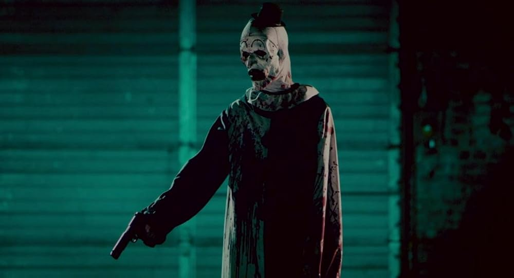
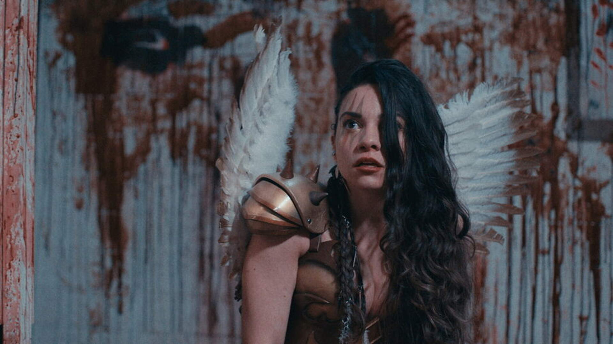
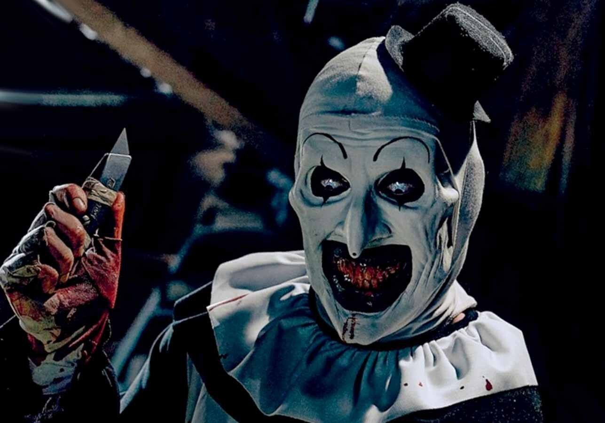

Recopilación de la información más relevante de las tres películas de Terrifier.
Terrifier es una franquicia creada por Damien Leone que ha revolucionado el cine slasher contemporáneo gracias a su sádico y silencioso antagonista…
«Los está matando uno a uno... como vacas.»
- Cat Lady

Director: Damien Leone
Duración: 82 min (1h 22min)
Sinopsis:Dos amigas se cruzan con Art el Payaso, un asesino sádico y aterrador que comienza a perseguirlas durante la noche de Halloween. Lo que parecía una noche normal se convierte en una auténtica pesadilla llena de violencia y terror.
Estrellas en mi opinión: ★★★★★

Director: Damien Leone
Duración: 138 min (2h 18min)
Sinopsis:Resucitado por una entidad siniestra, Art el Payaso regresa al condado de Miles la noche de Halloween. En esta ocasión, fija su atención en una adolescente y su hermano menor, quienes guardan un misterioso vínculo con el pasado del despiadado asesino.
Estrellas en mi opinión: ★★★★★

Director: Damien Leone
Duración: 125 min (2h 5min)
Sinopsis: Art el Payaso se dispone a sembrar el caos y el terror entre los habitantes del condado de Miles mientras estos se preparan para celebrar las fiestas navideñas, llevando su sadismo a un nivel completamente nuevo y festivo.
Estrellas en mi opinión: ★★★★